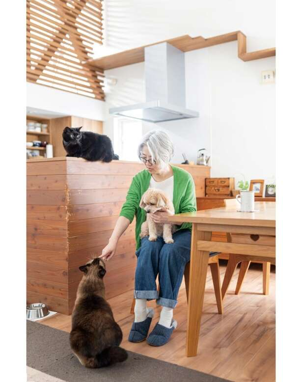

“57岁，单身生活活泼幸福” (Harisaneze/KADOKAWA) 第 1 名 [共 12 次]
Risanese 与她心爱的狗和猫住在北海道。我曾经过着以工作为中心的忙碌生活，但在人生的转折点，我面对了自己真正想做的事情，并根据自己做出了选择，比如盖房子、提前退休、作为自由职业者接受新的挑战。书“57岁，单身生活活泼幸福”*本文摘自Harisaneze所著《57岁，活泼快乐的独居》一书。
*本文摘自Harisaneze所著《57岁，活泼快乐的独居》一书。
里萨尼斯的答案！请告诉我你50多岁时的烦恼！
问：一个人生活不觉得孤独寂寞吗？
A：你是在咒骂自己一个人很孤独吗？
我觉得很多人都咒骂自己，认为孤独是孤独的。
孤独只是一个主观的东西，一个人是否感到孤独取决于那个人。。难道你不认真对待一种得出“人是孤独的”或“穷人”的偏见价值观吗？
我从未结过婚，所以我花了很多时间独自一人，但我并不真正感到孤独。
我喜欢宅在家里、看电影、吃美食、旅游……不仅不孤单，而且自由自在。我很高兴。
然而，即使是我，有时也会感到孤独。但那些感觉并不痛苦，也不痛苦。对我来说，这是一种情感，就像“有趣”、“快乐”和“沮丧”一样。控制自己的情绪不是很困难吗？ 即使你感到孤独，也要接受现状。。就是这样。
[尝试！] 对于初学者！如何享受自己
如果您想独自出去但又没有勇气，我们建议您去电影院。很多人都是一个人来的，即使和其他人一起来，在放映过程中也不能互相交谈，所以一个人很难感到不舒服。之后，去咖啡馆反思一下你对电影的印象很有趣，这是一种有趣的独处时间方式。